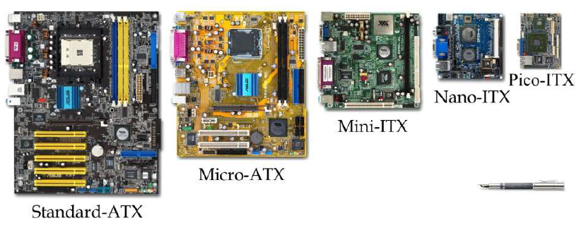
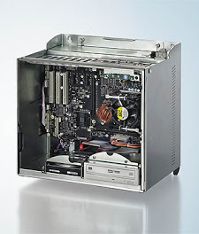
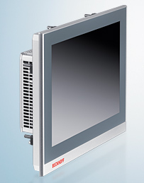
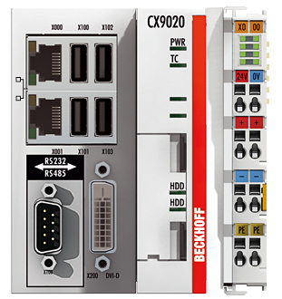
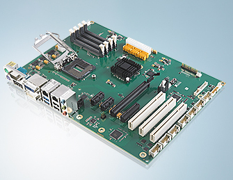
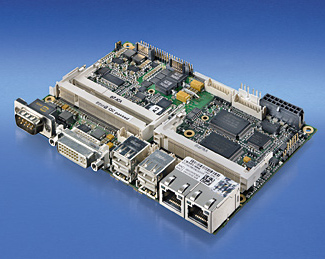
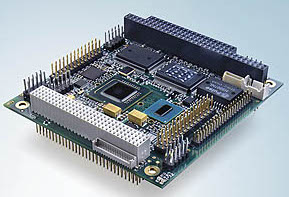

Het moederbord wordt vaak vergeleken met de ruggengraat van een computer. Alle apparaten die in en rond een computer voorkomen zoals processor, werkgeheugen, scherm, toetsenbord, ... worden er op aangesloten.
In principe is een moederbord niets meer dan een PCB of Printed Circuit Board met verschillende aansluitingen. Een moederbord heeft zelf geen rekenkracht maar het vertrouwt op andere componenten om correct te functioneren.
Het ontwerpen van een moederbord is niet eenvoudig gezien de afmetingen vastliggen volgens een bepaalde standaard zoals bijvoorbeeld ATX of Advanced Technology Extended.

De afmetingen van Standard-ATX zijn 30,5 cm op 24,4 cm (ongeveer een A4 blad) en op deze oppervlakte moeten bijgevolg alle aansluitingen komen die het moederbord moet ondersteunen. Hierbij denken we vooral aan:
Zo een standaard legt meer vast dan de lengte en de breedte. Ze bepaalt ook waar de schroefgaten zitten, waar het blok met de aansluitingen aan de achterkant uitkomt en waar de voeding zijn stekkers kwijt kan. Daardoor past elk ATX moederbord in elke ATX kast, en werkt elke ATX voeding erop.
Die vaste maat is meteen het nadeel van ATX. Een bord van dat formaat vraagt een kast die er plaats voor heeft, en zo een kast staat niet in een machine en past niet op een DIN rail. En omdat alle aansluitingen op dat ene oppervlak moeten, ligt de indeling van het bord grotendeels vast: zet een fabrikant er een aansluiting bij, dan moet er ergens anders plaats weg.
Een industriële computer zoals een Control Cabinet PC houdt zich meestal aan de standaard ATX afmetingen maar bij een embedded PC, die vaak gemonteerd wordt op een DIN rail, wijken die afmetingen natuurlijk af. Daar wordt de PC104 standaard gebruikt.
Voor Panel PCs wordt de 3,5″ standaard gebruikt.
Als je kijkt naar de verschillen tussen de drie moederborden dan zie je dat er bij ATX nog mogelijkheden zijn om bepaalde componenten zoals processor, werkgeheugen, harde schijf, grafische kaart, ... te vervangen.
Bij de PC104 standaard is dat niet het geval. Vandaar ook de naam: embedded system.
Het enige wat je meestal nog kan veranderen in een embedded system is de SD kaart. Als je goed kijkt zie je ook 2 SD kaart slots in de behuizing van de embedded PC. Op de SD kaart staat het besturingssysteem en het programma dat je wil laten uitvoeren.
Aan een embedded system hang je meestal ook I/O eilanden om een extern proces uit te lezen of aan te sturen. Ook die kan je uitwisselen maar in principe maken deze geen deel uit van het embedded system.
| Control Cabinet | Panel PC | Embedded PC |
|---|---|---|
 |  |  |
 |  |  |
| ATX | 3,5″ | PC104 |